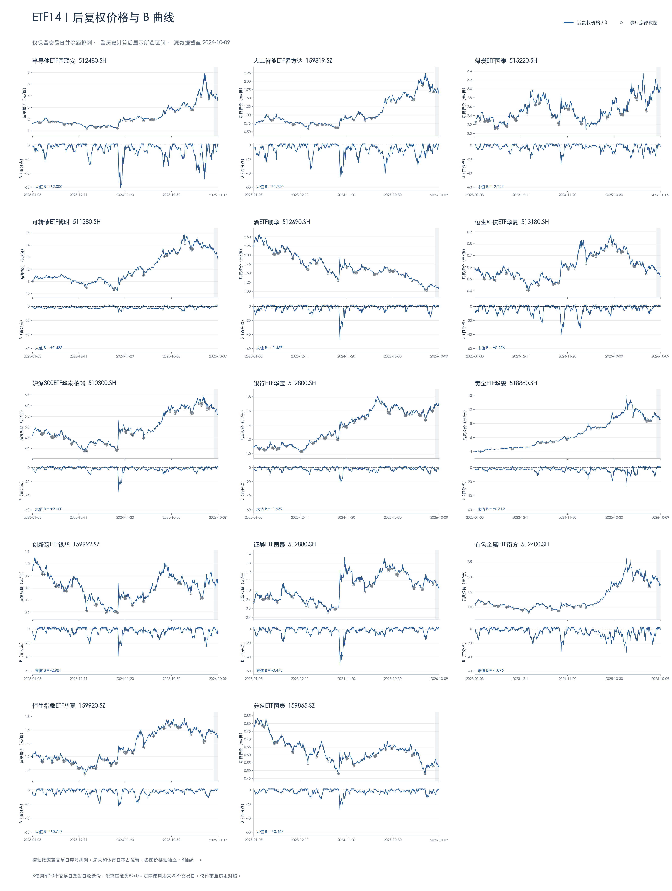
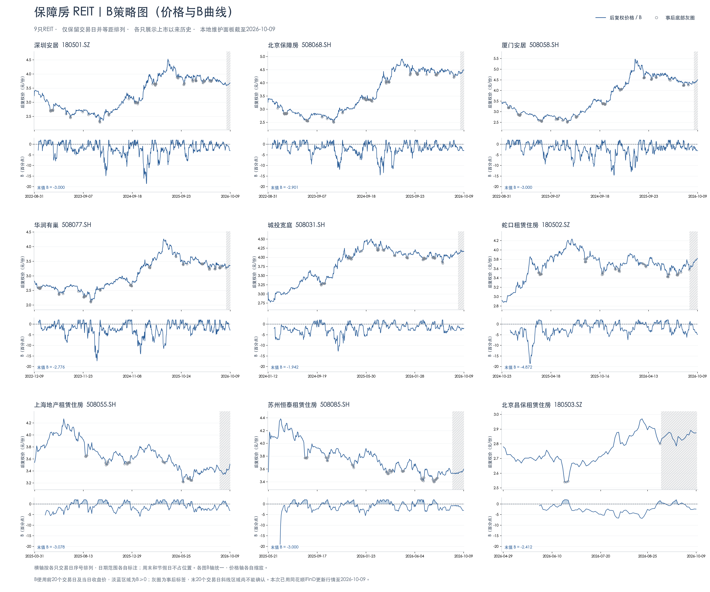
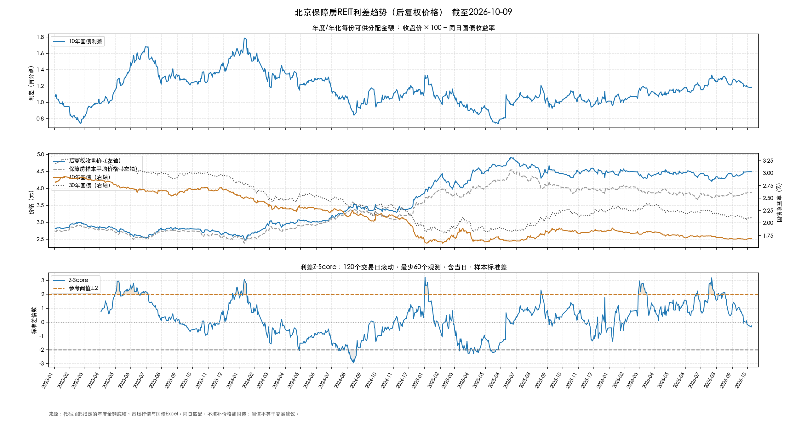

MARKET CHARTS / 图表中心
常看的趋势，
集中在这里。
ETF与保障房REIT的B策略，以及保障房利差趋势。选择一组图表即可查看、放大或保存。

01 / B策略趋势↗
14只ETF
后复权价格与B曲线 · 仅交易日横轴
数据截至 2026-10-09

02 / B策略趋势↗
9只保障房REIT
上市以来价格与B曲线 · 九只合图
数据截至 2026-10-09

03 / 利差趋势↗
保障房REIT
7张单图 · 国债利差与Z-Score
数据截至 2026-10-09